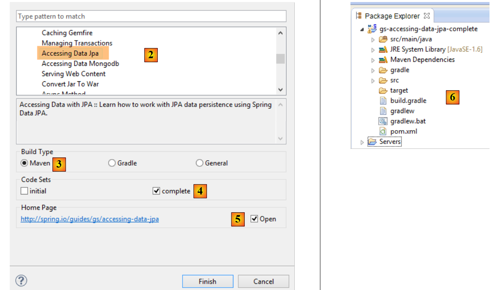
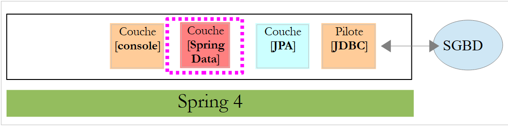
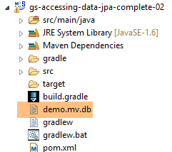
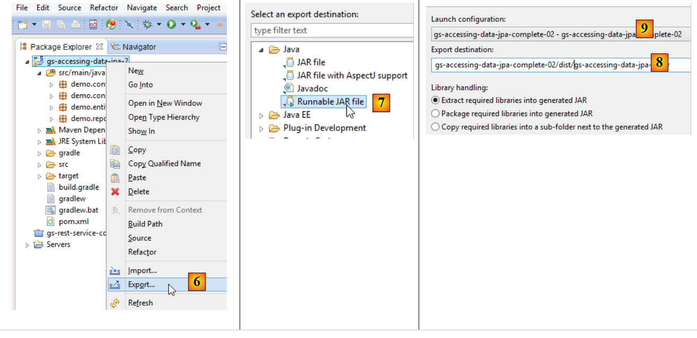
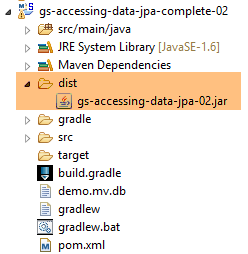

5. مقدمة إلى Spring Data JPA
في هذا الفصل، سنقوم بفحص البنية التالية:
 |
نقوم بإدراج طبقة [JPA] (واجهة برمجة تطبيقات الاستمرارية في Java) بين طبقة [DAO] ومحرك JDBC الخاص بنظام إدارة قواعد البيانات (DBMS). من الآن فصاعدًا، تقوم طبقة JPA بإصدار أوامر SQL الموجهة إلى نظام إدارة قواعد البيانات (DBMS). لم تعد طبقة [DAO] تتعامل مع أوامر SQL، بل تتعامل فقط مع كائنات تسمى كيانات JPA، وهي تمثيلات للجداول المختلفة في قاعدة البيانات المستخدمة. ترتبط حقول هذه الكيانات بشكل فريد بأعمدة الجدول عبر تعليقات Java. وهذا ما يسمح لطبقة JPA بترجمة عمليات طبقة [DAO] على كيانات JPA إلى لغة SQL.
Spring Data هو فرع من Spring يركز على الوصول إلى البيانات، سواء كانت البيانات مخزنة في نظام إدارة قواعد البيانات العلائقية (RDBMS) أو قاعدة بيانات NoSQL أو أنواع أخرى من التخزين. هنا، نحن مهتمون فقط بنظام إدارة قواعد البيانات العلائقية (RDBMS) والوصول إليها عبر JPA. في وقت لاحق، سنكتب أحيانًا [Spring JPA] للإشارة فعليًا إلى [Spring Data JPA]. في البنية أعلاه، تزود طبقة [Spring Data] طبقة [DAO] بأدوات لإدارة كيانات JPA.
JPA هي في الواقع مواصفة. سنختبر ثلاثة من تطبيقاتها:
- Hibernate (http://hibernate.org/)؛
- EclipseLink (http://www.eclipse.org/eclipselink/)؛
- OpenJpa (http://openjpa.apache.org/)؛
5.1. مثال-01
يقدم موقع Spring الإلكتروني العديد من الدروس التعليمية للبدء في استخدام Spring [http://spring.io/guides]. سنستخدم إحداها لتقديم Spring Data. ولهذا الغرض، سنستخدم Spring Tool Suite (STS).
 |
- في [1]، نقوم باستيراد أحد البرامج التعليمية من [spring.io/guides]؛
 |
- في [2]، نختار البرنامج التعليمي [Accessing Data Jpa]، الذي يوضح كيفية الوصول إلى قاعدة البيانات باستخدام Spring Data؛
- في [3]، نختار مشروعًا تم تكوينه بواسطة Maven؛
- في [4]، يتوفر البرنامج التعليمي في شكلين: [initial]، وهي نسخة فارغة تقوم بملئها باتباع البرنامج التعليمي، أو [complete]، وهي النسخة النهائية من البرنامج التعليمي. نختار الخيار الأخير؛
- في [5]، يمكنك اختيار عرض البرنامج التعليمي في متصفح؛
- في [6]، المشروع النهائي.
5.1.1. تكوين Maven للمشروع
يتم تكوين تبعيات Maven الخاصة بالمشروع في ملف [pom.xml]:
<groupId>org.springframework</groupId>
<artifactId>gs-accessing-data-jpa</artifactId>
<version>0.1.0</version>
<parent>
<groupId>org.springframework.boot</groupId>
<artifactId>spring-boot-starter-parent</artifactId>
<version>1.2.3.RELEASE</version>
</parent>
<dependencies>
<dependency>
<groupId>org.springframework.boot</groupId>
<artifactId>spring-boot-starter-data-jpa</artifactId>
</dependency>
<dependency>
<groupId>com.h2database</groupId>
<artifactId>h2</artifactId>
</dependency>
</dependencies>
<properties>
<!-- use UTF-8 for everything -->
<project.build.sourceEncoding>UTF-8</project.build.sourceEncoding>
<project.reporting.outputEncoding>UTF-8</project.reporting.outputEncoding>
<start-class>hello.Application</start-class>
</properties>
- الأسطر 5–9: تعريف مشروع Maven الأصلي. يحدد هذا المشروع معظم تبعيات المشروع. قد تكون هذه التبعيات كافية، وفي هذه الحالة لا تضاف أي تبعيات إضافية، أو قد لا تكون كافية، وفي هذه الحالة تضاف التبعيات المفقودة؛
- الأسطر 12–15: تحدد تبعية لـ [spring-boot-starter-data-jpa]. تحتوي هذه الأداة على فئات Spring Data؛
- الأسطر 16–19: تحدد تبعية لنظام إدارة قواعد البيانات H2، الذي يسمح لك بإنشاء وإدارة قواعد البيانات في الذاكرة.
دعونا نلقي نظرة على الفئات التي توفرها هذه التبعيات:
 |  |  |
هناك العديد منها:
- بعضها ينتمي إلى نظام Spring (تلك التي تبدأ بـ spring)؛
- والبعض الآخر ينتمي إلى منظومة Hibernate (hibernate، jboss)، التي نستخدم تطبيق JPA الخاص بها هنا؛
- وبعضها الآخر عبارة عن مكتبات اختبار (junit، hamcrest)؛
- وبعضها الآخر عبارة عن مكتبات تسجيل (log4j، logback، slf4j)؛
سنحتفظ بها جميعًا. بالنسبة لتطبيق الإنتاج، يجب الاحتفاظ فقط بالمكتبات الضرورية.
في السطر 26 من ملف [pom.xml]، نجد السطر:
<start-class>hello.Application</start-class>
هذا السطر مرتبط بالأسطر التالية:
<build>
<plugins>
<plugin>
<artifactId>maven-compiler-plugin</artifactId>
</plugin>
<plugin>
<groupId>org.springframework.boot</groupId>
<artifactId>spring-boot-maven-plugin</artifactId>
</plugin>
</plugins>
</build>
الأسطر 6–9: يتيح لك [spring-boot-maven-plugin] إنشاء ملف JAR القابل للتنفيذ الخاص بالتطبيق. ثم تحدد السطر 26 من ملف [pom.xml] الفئة القابلة للتنفيذ لهذا الملف JAR.
5.1.2. طبقة [JPA]
يتم التعامل مع الوصول إلى قاعدة البيانات من خلال طبقة [JPA]، وهي واجهة برمجة تطبيقات Java Persistence:
 |
 |
التطبيق بسيط ويقوم بإدارة كيانات [Customer]. فئة [Customer] هي جزء من طبقة [JPA] وهي كما يلي:
package hello;
import javax.persistence.Entity;
import javax.persistence.GeneratedValue;
import javax.persistence.GenerationType;
import javax.persistence.Id;
@Entity
public class Customer {
@Id
@GeneratedValue(strategy = GenerationType.AUTO)
private long id;
private String firstName;
private String lastName;
protected Customer() {
}
public Customer(String firstName, String lastName) {
this.firstName = firstName;
this.lastName = lastName;
}
@Override
public String toString() {
return String.format("Customer[id=%d, firstName='%s', lastName='%s']", id, firstName, lastName);
}
}
يحتوي العميل على معرف [id] واسم أول [firstName] واسم عائلة [lastName]. تمثل كل مثيل [Customer] صفًا في جدول قاعدة البيانات.
- السطر 8: تعليق JPA يضمن أن استمرارية مثيلات [Customer] (إنشاء، قراءة، تحديث، حذف) ستدار بواسطة تطبيق JPA. استنادًا إلى تبعيات Maven، يمكننا أن نرى أن تطبيق JPA/Hibernate قيد الاستخدام؛
- السطران 11-12: تعليقات توضيحية JPA تربط حقل [id] بالمفتاح الأساسي لجدول [Customer]. يشير السطر 12 إلى أن تطبيق JPA سيستخدم طريقة إنشاء المفتاح الأساسي الخاصة بنظام إدارة قواعد البيانات المستخدم، وهو H2 في هذه الحالة؛
لا توجد تعليقات توضيحية أخرى لـ JPA. وبالتالي، سيتم استخدام القيم الافتراضية:
- سيتم تسمية جدول [Customer] على اسم الفئة، أي [Customer]؛
- سيتم تسمية أعمدة هذا الجدول على اسم حقول الفئة: [id, firstName, lastName]، مع ملاحظة أن حالة الأحرف لا تؤخذ في الاعتبار في أسماء أعمدة الجدول؛
لاحظ أن تطبيق JPA المستخدم لا يُسمى أبدًا.
5.1.3. طبقة [Spring Data]
تنفذ فئة [CustomerRepository] طبقة الوصول لجدول [Customer]. وفيما يلي كودها:
 |
 |
package hello;
import java.util.List;
import org.springframework.data.repository.CrudRepository;
public interface CustomerRepository extends CrudRepository<Customer, Long> {
List<Customer> findByLastName(String lastName);
}
وبالتالي، فهذه واجهة وليست فئة (السطر 7). وهي تمتد واجهة [CrudRepository]، وهي واجهة Spring Data (السطر 5). يتم تحديد معلمات هذه الواجهة بواسطة نوعين: الأول هو نوع العناصر المدارة، وهو هنا نوع [Customer]؛ والثاني هو نوع المفتاح الأساسي للعناصر المدارة، وهو هنا نوع [Long]. واجهة [CrudRepository] هي كما يلي:
package org.springframework.data.repository;
import java.io.Serializable;
@NoRepositoryBean
public interface CrudRepository<T, ID extends Serializable> extends Repository<T, ID> {
<S extends T> S save(S entity);
<S extends T> Iterable<S> save(Iterable<S> entities);
T findOne(ID id);
boolean exists(ID id);
Iterable<T> findAll();
Iterable<T> findAll(Iterable<ID> ids);
long count();
void delete(ID id);
void delete(T entity);
void delete(Iterable<? extends T> entities);
void deleteAll();
}
تحدد هذه الواجهة عمليات CRUD (إنشاء – قراءة – تحديث – حذف) التي يمكن تنفيذها على نوع JPA T:
- السطر 8: تسمح طريقة save بتخزين الكيان T في قاعدة البيانات. وهي تخزن الكيان باستخدام المفتاح الأساسي المخصص له بواسطة نظام إدارة قواعد البيانات (DBMS). كما تسمح بتحديث الكيان T المحدد بواسطة معرف المفتاح الأساسي الخاص به. يعتمد الاختيار بين هذين الإجراءين على قيمة معرف المفتاح الأساسي: إذا كانت قيمة معرف المفتاح الأساسي null، تتم عملية التخزين؛ وإلا، تتم عملية التحديث؛
- السطر 10: كما هو مذكور أعلاه، ولكن بالنسبة لقائمة الكيانات؛
- السطر 12: تسترد طريقة findOne كيانًا T يتم تحديده بواسطة مفتاحه الأساسي id؛
- السطر 22: تسمح لك طريقة delete بحذف كيان T المحدد بواسطة مفتاحه الأساسي id؛
- الأسطر 24–28: أشكال مختلفة من طريقة [delete]؛
- السطر 16: تسترد طريقة [findAll] جميع كيانات T الدائمة؛
- السطر 18: كما هو مذكور أعلاه، ولكن يقتصر على الكيانات التي تم توفير قائمة بمعرفاتها؛
لنعد إلى واجهة [CustomerRepository]:
package hello;
import java.util.List;
import org.springframework.data.repository.CrudRepository;
public interface CustomerRepository extends CrudRepository<Customer, Long> {
List<Customer> findByLastName(String lastName);
}
- السطر 9 يسمح لك باسترداد [Customer] حسب [lastName]؛
وهذا كل شيء بالنسبة لطبقة [DAO]. لا توجد فئة تنفيذ للواجهة السابقة. يتم إنشاؤها في وقت التشغيل بواسطة [Spring Data]. يتم تنفيذ أساليب واجهة [CrudRepository] تلقائيًا. أما بالنسبة للأساليب المضافة إلى واجهة [CustomerRepository]، فهذا يعتمد على الحالة. لنعد إلى تعريف [Customer]:
private long id;
private String firstName;
private String lastName;
يتم تنفيذ الطريقة الموجودة في السطر 9 تلقائيًا بواسطة [Spring Data] لأنها تشير إلى حقل [lastName] (السطر 3) في [Customer]. عندما تصادف طريقة [findBySomething] في الواجهة المراد تنفيذها، تقوم Spring Data بتنفيذها باستخدام استعلام JPQL (لغة استعلامات الاستمرارية في Java) التالي:
لذلك، يجب أن يحتوي النوع T على حقل باسم [something]. وبالتالي، فإن الطريقة
بكود مشابه لما يلي:
return [em].createQuery("select c from Customer c where c.lastName=:value").setParameter("value",lastName).getResultList()
حيث يشير [em] إلى سياق ثبات JPA. وهذا ممكن فقط إذا كانت فئة [Customer] تحتوي على حقل باسم [lastName]، وهو ما يحدث بالفعل.
في الختام، في الحالات البسيطة، يسمح لنا Spring Data بتنفيذ طبقة [DAO] بواجهة بسيطة.
5.1.4. طبقة [console]
 |
 |
فئة [Application] هي كما يلي:
package hello;
import org.springframework.beans.factory.annotation.Autowired;
import org.springframework.boot.CommandLineRunner;
import org.springframework.boot.SpringApplication;
import org.springframework.boot.autoconfigure.SpringBootApplication;
@SpringBootApplication
public class Application implements CommandLineRunner {
@Autowired
CustomerRepository repository;
public static void main(String[] args) {
SpringApplication.run(Application.class);
}
@Override
public void run(String... strings) throws Exception {
// save a couple of customers
repository.save(new Customer("Jack", "Bauer"));
repository.save(new Customer("Chloe", "O'Brian"));
repository.save(new Customer("Kim", "Bauer"));
repository.save(new Customer("David", "Palmer"));
repository.save(new Customer("Michelle", "Dessler"));
// fetch all customers
System.out.println("Customers found with findAll():");
System.out.println("-------------------------------");
for (Customer customer : repository.findAll()) {
System.out.println(customer);
}
System.out.println();
// fetch an individual customer by ID
Customer customer = repository.findOne(1L);
System.out.println("Customer found with findOne(1L):");
System.out.println("--------------------------------");
System.out.println(customer);
System.out.println();
// fetch customers by last name
System.out.println("Customer found with findByLastName('Bauer'):");
System.out.println("--------------------------------------------");
for (Customer bauer : repository.findByLastName("Bauer")) {
System.out.println(bauer);
}
}
}
- السطر 9: تنفذ الفئة واجهة [CommandLineRunner]، وهي واجهة [Spring Boot] (السطر 4). تحتوي هذه الواجهة على طريقة واحدة فقط، وهي الموجودة في السطر 19؛
- السطر 8: @SpringBootApplication هي تعليمة توضيحية تجمع عدة تعليقات توضيحية [Spring Boot]:
- @Configuration: تشير إلى أن الفئة هي فئة تكوين؛
- @EnableAutoConfiguration: يوجه [Spring Boot] لإنشاء عدد من الفاصوليا تلقائيًا بناءً على خصائص متنوعة، لا سيما محتويات مسار فئات المشروع. ونظرًا لوجود مكتبات Hibernate في مسار الفئات، سيتم تنفيذ فاصوليا [entityManagerFactory] باستخدام Hibernate. ونظرًا لوجود مكتبة H2 DBMS في مسار الفئات، سيتم تنفيذ فاصوليا [dataSource] باستخدام H2. في bean [dataSource]، يجب علينا أيضًا تعريف اسم المستخدم وكلمة المرور. هنا، سيستخدم Spring Boot المسؤول الافتراضي لـ H2، الذي لا يحتوي على كلمة مرور. ونظرًا لوجود مكتبة [spring-tx] في مسار الفئات، سيتم استخدام مدير المعاملات في Spring؛
- @EnableWebMvc: إذا كانت مكتبة [spring-mvc] موجودة في مسار الفئات. في هذه الحالة، يتم إجراء التكوين التلقائي لتطبيق الويب؛
- @ComponentScan: الذي يحدد لـ Spring مكان البحث عن الحبوب والتكوينات والخدمات الأخرى. هنا، يتم البحث عنها افتراضيًا في الحزمة التي تحتوي على الفئة المُعلَّمة، أي حزمة [hello]. وبالتالي، سيتم العثور على فئتي [Customer] و [CustomerRepository]. ونظرًا لأن الأولى تحتوي على تعليق [@Entity]، فسيتم تصنيفها ككيان يديره Hibernate. ونظرًا لأن الثانية تمتد واجهة [CrudRepository]، فسيتم تسجيلها كحبة Spring؛
- السطران 11-12: يتم حقن bean [CustomerRepository] في كود الفئة الرئيسية؛
- السطر 15: يتم تنفيذ الطريقة الثابتة [run] لفئة [SpringApplication] من مشروع Spring Boot. معلمتها هي الفئة التي تحتوي على تعليق [Configuration] أو [EnableAutoConfiguration]. بعد ذلك، سيتم تنفيذ كل ما تم شرحه سابقًا. والنتيجة هي سياق تطبيق Spring، أي مجموعة من الحبوب التي يديرها Spring؛
- السطور 19–48: تستخدم العمليات التالية ببساطة طرق bean التي تنفذ واجهة [CustomerRepository]؛
إخراج وحدة التحكم كما يلي:
- الأسطر 1-8: شعار مشروع Spring Boot؛
- السطر 9: يتم تنفيذ فئة [hello.Application]؛
- السطر 10: [AnnotationConfigApplicationContext] هي فئة تنفذ واجهة [ApplicationContext] الخاصة بـ Spring. وهي عبارة عن حاوية bean؛
- السطر 11: يتم تنفيذ bean [entityManagerFactory] باستخدام فئة [LocalContainerEntityManagerFactory]، وهي فئة Spring. وهي تدير طبقة [JPA]؛
- السطر 12: يظهر [Hibernate]. هذا هو تطبيق JPA المختار؛
- السطر 19: لهجة Hibernate هي متغير SQL الذي سيتم استخدامه مع نظام إدارة قواعد البيانات (DBMS). هنا، تشير لهجة [H2Dialect] إلى أن Hibernate سيعمل مع نظام إدارة قواعد البيانات H2؛
- السطران 21-22: يتم إنشاء قاعدة البيانات. يتم إنشاء الجدول [CUSTOMER]. وهذا يعني أن Hibernate قد تم تكوينه لإنشاء جداول من تعريفات JPA، وفي هذه الحالة تعريف JPA لفئة [Customer]؛
- الأسطر 26-30: نتيجة طريقة [findAll] للواجهة؛
- السطر 34: نتيجة طريقة [findOne] للواجهة؛
- السطور 38-39: نتائج طريقة [findByLastName]؛
- السطور 41 وما يليها: سجلات من إغلاق سياق Spring.
5.1.5. التكوين اليدوي لمشروع Spring Data
نقوم بنسخ المشروع السابق إلى مشروع [gs-accessing-data-jpa-02]:
 |
في هذا المشروع الجديد، لن نعتمد على التكوين التلقائي الذي يوفره Spring Boot. سنقوم بتكوينه يدويًا. قد يكون هذا مفيدًا إذا كانت التكوينات الافتراضية لا تناسب احتياجاتنا.
أولاً، سنحدد التبعيات الضرورية في ملف [pom.xml]:
<?xml version="1.0" encoding="UTF-8"?>
<project xmlns="http://maven.apache.org/POM/4.0.0" xsi:schemaLocation="http://maven.apache.org/POM/4.0.0 http://maven.apache.org/maven-v4_0_0.xsd"
xmlns:xsi="http://www.w3.org/2001/XMLSchema-instance">
<modelVersion>4.0.0</modelVersion>
<groupId>org.springframework</groupId>
<artifactId>gs-accessing-data-jpa-02</artifactId>
<version>0.1.0</version>
<parent>
<groupId>org.springframework.boot</groupId>
<artifactId>spring-boot-starter-parent</artifactId>
<version>1.2.3.RELEASE</version>
</parent>
<dependencies>
<!-- Spring Data -->
<dependency>
<groupId>org.springframework.data</groupId>
<artifactId>spring-data-jpa</artifactId>
</dependency>
<!-- Hibernate -->
<dependency>
<groupId>org.hibernate</groupId>
<artifactId>hibernate-entitymanager</artifactId>
</dependency>
<!-- H2 Database -->
<dependency>
<groupId>com.h2database</groupId>
<artifactId>h2</artifactId>
</dependency>
<!-- Tomcat JDBC -->
<dependency>
<groupId>org.apache.tomcat</groupId>
<artifactId>tomcat-jdbc</artifactId>
</dependency>
</dependencies>
<properties>
<!-- use UTF-8 for everything -->
<project.build.sourceEncoding>UTF-8</project.build.sourceEncoding>
<project.reporting.outputEncoding>UTF-8</project.reporting.outputEncoding>
</properties>
<build>
<plugins>
<plugin>
<groupId>org.springframework.boot</groupId>
<artifactId>spring-boot-maven-plugin</artifactId>
</plugin>
</plugins>
</build>
<repositories>
<repository>
<id>spring-releases</id>
<name>Spring Releases</name>
<url>https://repo.spring.io/libs-release</url>
</repository>
<repository>
<id>org.jboss.repository.releases</id>
<name>JBoss Maven Release Repository</name>
<url>https://repository.jboss.org/nexus/content/repositories/releases</url>
</repository>
</repositories>
<pluginRepositories>
<pluginRepository>
<id>spring-releases</id>
<name>Spring Releases</name>
<url>https://repo.spring.io/libs-release</url>
</pluginRepository>
</pluginRepositories>
</project>
- الأسطر 10–14: مشروع Maven الأصلي الذي سنستخدم مكتباته؛
- الأسطر 18–21: Spring Data المستخدم للوصول إلى قاعدة البيانات؛
- الأسطر 23–26: تطبيق Hibernate لمواصفات JPA؛
- الأسطر 28–31: نظام إدارة قواعد البيانات H2؛
- الأسطر 33–36: غالبًا ما تُستخدم قواعد البيانات مع مجموعات الاتصال، مما يتجنب فتح وإغلاق الاتصالات بشكل متكرر. هنا، يتم استخدام تطبيق [tomcat-jdbc]؛
في المشروع الجديد، تظل كيان [Customer] وواجهة [CustomerRepository] دون تغيير. سنقوم بتعديل فئة [Application]، التي سيتم تقسيمها إلى فئتين:
- [Config]، التي ستكون فئة التكوين؛
- [Main]، التي ستكون فئة التنفيذ؛
 |
أصبحت فئة [Application] القابلة للتنفيذ كما يلي:
package console;
import org.springframework.context.annotation.AnnotationConfigApplicationContext;
import repositories.CustomerRepository;
import config.AppConfig;
import entities.Customer;
public class Application {
public static void main(String[] args) {
// instantiation Spring context
AnnotationConfigApplicationContext context = new AnnotationConfigApplicationContext(AppConfig.class);
CustomerRepository repository = context.getBean(CustomerRepository.class);
// save a couple of customers
repository.save(new Customer("Jack", "Bauer"));
repository.save(new Customer("Chloe", "O'Brian"));
repository.save(new Customer("Kim", "Bauer"));
repository.save(new Customer("David", "Palmer"));
repository.save(new Customer("Michelle", "Dessler"));
...
// closing context
context.close();
}
}
- السطر 9: لم تعد فئة [Application] تحتوي على أي تعليقات توضيحية للتكوين؛
- الأسطر 3–7: لاحظ أنه لم يعد هناك أي استيراد لحزمة [Spring Boot]؛
- السطر 12: نقوم بإنشاء مثيلات لـ Spring beans. نحصل على سياق Spring، الذي يحتوي على مراجع إلى المكونات التي تم إنشاؤها؛
- السطر 13: نطلب مرجعًا إلى حبة [CustomerRepository]؛
فئة [ Config] التي تهيئ المشروع هي كما يلي:
package config;
import javax.persistence.EntityManagerFactory;
import org.apache.tomcat.jdbc.pool.DataSource;
import org.springframework.context.annotation.Bean;
import org.springframework.context.annotation.Configuration;
import org.springframework.data.jpa.repository.config.EnableJpaRepositories;
import org.springframework.orm.jpa.JpaTransactionManager;
import org.springframework.orm.jpa.JpaVendorAdapter;
import org.springframework.orm.jpa.LocalContainerEntityManagerFactoryBean;
import org.springframework.orm.jpa.vendor.Database;
import org.springframework.orm.jpa.vendor.HibernateJpaVendorAdapter;
import org.springframework.transaction.PlatformTransactionManager;
import org.springframework.transaction.annotation.EnableTransactionManagement;
@EnableTransactionManagement
@EnableJpaRepositories(basePackages = { "repositories" })
@Configuration
// @ComponentScan(basePackages={"package1","package2"})
public class AppConfig {
// h2 database
@Bean
public DataSource dataSource() {
// data source TomcatJdbc
DataSource dataSource = new DataSource();
// configuration access JDBC
dataSource.setDriverClassName("org.h2.Driver");
dataSource.setUrl("jdbc:h2:./demo");
dataSource.setUsername("sa");
dataSource.setPassword("");
// an initially open connection
dataSource.setInitialSize(1);
// result
return dataSource;
}
// the provider JPA
@Bean
public JpaVendorAdapter jpaVendorAdapter() {
HibernateJpaVendorAdapter hibernateJpaVendorAdapter = new HibernateJpaVendorAdapter();
hibernateJpaVendorAdapter.setShowSql(false);
hibernateJpaVendorAdapter.setGenerateDdl(true);
hibernateJpaVendorAdapter.setDatabase(Database.H2);
return hibernateJpaVendorAdapter;
}
// EntityManagerFactory
@Bean
public EntityManagerFactory entityManagerFactory(JpaVendorAdapter jpaVendorAdapter, DataSource dataSource) {
LocalContainerEntityManagerFactoryBean factory = new LocalContainerEntityManagerFactoryBean();
factory.setJpaVendorAdapter(jpaVendorAdapter);
factory.setPackagesToScan("entities");
factory.setDataSource(dataSource);
factory.afterPropertiesSet();
return factory.getObject();
}
// Transaction manager
@Bean
public PlatformTransactionManager transactionManager(EntityManagerFactory entityManagerFactory) {
JpaTransactionManager txManager = new JpaTransactionManager();
txManager.setEntityManagerFactory(entityManagerFactory);
return txManager;
}
}
- السطر 17: تشير العلامة [@EnableTransactionManagement] إلى أنه يجب تفسير العلامات [@Transactional]. تحتوي طرق واجهات [CrudRepository] على هذه العلامات. وبالتالي، يتم تنفيذها ضمن معاملة؛
- السطر 18: تحدد العلامة [@EnableJpaRepositories] الدلائل التي توجد فيها واجهات Spring Data [CrudRepository]. ستصبح هذه الواجهات مكونات Spring وستكون متاحة في سياق Spring؛
- السطر 19: تجعل العلامة [@Configuration] فئة [Config] فئة تكوين Spring؛
- السطر 20: يدرج التعليق التوضيحي [@ComponentScan] الدلائل التي يجب البحث فيها عن مكونات Spring. مكونات Spring هي فئات مزودة بتعليقات توضيحية من Spring مثل @Service و@Component و@Controller وما إلى ذلك. هنا، لا توجد مكونات أخرى بخلاف تلك المحددة داخل فئة [AppConfig]، لذا تم تعليق التعليق التوضيحي؛
- الأسطر 24–37: تحدد مصدر البيانات، وهو قاعدة بيانات H2. إن علامة @Bean الموجودة في السطر 25 هي التي تجعل الكائن الذي تنشئه هذه الطريقة مكونًا تديره Spring. يمكن أن يكون اسم الطريقة أي اسم هنا. ومع ذلك، يجب تسميتها [dataSource] إذا كان EntityManagerFactory في السطر 51 غير موجود وتم تعريفه عبر التكوين التلقائي؛
- السطر 30: سيتم تسمية قاعدة البيانات [demo] وسيتم إنشاؤها في مجلد المشروع؛
- الأسطر 40-47: تعريف تطبيق JPA المستخدم، وهو في هذه الحالة تطبيق Hibernate. يمكن أن يكون اسم الطريقة أي شيء هنا؛
- السطر 43: لا توجد سجلات SQL؛
- السطر 44: سيتم إنشاء قاعدة البيانات إذا لم تكن موجودة؛
- الأسطر 50-58: تحدد EntityManagerFactory التي ستدير استمرارية JPA. يجب تسمية الطريقة [entityManagerFactory]؛
- السطر 51: تتلقى الطريقة معلمتين من أنواع الحبتين المحددتين سابقًا. سيتم بعد ذلك إنشاء هاتين الحبتين وحقنهما بواسطة Spring كمعلمات للطريقة؛
- السطر 53: يحدد تنفيذ JPA المراد استخدامه؛
- السطر 54: يحدد الدلائل التي يمكن العثور فيها على كيانات JPA؛
- السطر 55: يحدد مصدر البيانات المراد إدارته؛
- الأسطر 61–66: مدير المعاملات. يجب تسمية الطريقة [transactionManager]. تتلقى الفاصوليا من الأسطر 51–58 كمعلمة؛
- السطر 64: يرتبط مدير المعاملات بـ EntityManagerFactory؛
يمكن تعريف الطرق السابقة بأي ترتيب.
يؤدي تشغيل المشروع إلى نفس النتائج. يظهر ملف جديد في مجلد المشروع، وهو ملف قاعدة بيانات H2:
 |
5.1.6. إنشاء أرشيف قابل للتنفيذ
لإنشاء أرشيف قابل للتنفيذ للمشروع، اتبع الخطوات التالية:
 |
- في [1]: قم بإنشاء تكوين وقت التشغيل؛
- في [2]: من النوع [تطبيق Java]
- في [3]: حدد المشروع المراد تشغيله (استخدم زر "تصفح")؛
- في [4]: حدد الفئة المراد تشغيلها؛
- في [5]: اسم تكوين التشغيل — يمكن أن يكون أي شيء؛
 |
- في [6]: تصدير المشروع؛
- في [7]: كأرشيف JAR قابل للتنفيذ؛
- في [8]: حدد مسار واسم الملف القابل للتنفيذ المراد إنشاؤه؛
- في [9]: اسم تكوين التشغيل الذي تم إنشاؤه في [5]؛
10  |
- في [10]، الأرشيف الذي تم إنشاؤه؛
بمجرد الانتهاء من ذلك، افتح نافذة الأوامر في المجلد الذي يحتوي على الأرشيف القابل للتنفيذ:
يتم تنفيذ الأرشيف على النحو التالي:
.....\dist>java -jar gs-accessing-data-jpa-02.jar
النتائج المعروضة في وحدة التحكم هي كما يلي:
5.1.7. إنشاء مشروع [Spring Data]
لإنشاء قالب مشروع Spring Data، اتبع الخطوات التالية:
 |
- في [1]، أنشئ مشروعًا جديدًا؛
- في [2]: حدد [Spring Starter Project]؛
- سيكون المشروع الذي تم إنشاؤه مشروع Maven. في [3]، حدد اسم مجموعة المشروع؛
- في [4]، حدد اسم الأداة (ملف JAR هنا) التي سيتم إنشاؤها عند بناء المشروع؛
- في [5]: اسم المشروع في Eclipse — يمكن أن يكون أي شيء (لا يجب أن يتطابق مع [4])؛
- في [7]: حدد أنك تقوم بإنشاء مشروع بطبقة [JPA] باستخدام نظام إدارة قواعد البيانات MySQL. سيتم بعد ذلك تضمين التبعيات المطلوبة لمثل هذا المشروع في ملف [pom.xml]؛
 |
- في [8]، أدخل اسم مجلد المشروع؛
- في [9]، أكمل المعالج؛
 |
- في [10]: المشروع الذي تم إنشاؤه؛
يتضمن ملف [pom.xml] التبعيات المطلوبة لمشروع JPA:
<?xml version="1.0" encoding="UTF-8"?>
<project xmlns="http://maven.apache.org/POM/4.0.0" xmlns:xsi="http://www.w3.org/2001/XMLSchema-instance"
xsi:schemaLocation="http://maven.apache.org/POM/4.0.0 http://maven.apache.org/xsd/maven-4.0.0.xsd">
<modelVersion>4.0.0</modelVersion>
<groupId>istia.st.springdata</groupId>
<artifactId>intro-spring-data-01</artifactId>
<version>0.0.1-SNAPSHOT</version>
<packaging>jar</packaging>
<name>intro-spring-data-01</name>
<description>démo spring data avec table de produits</description>
<parent>
<groupId>org.springframework.boot</groupId>
<artifactId>spring-boot-starter-parent</artifactId>
<version>1.2.3.RELEASE</version>
<relativePath/> <!-- lookup parent from repository -->
</parent>
<properties>
<project.build.sourceEncoding>UTF-8</project.build.sourceEncoding>
<start-class>demo.IntroSpringData01Application</start-class>
<java.version>1.7</java.version>
</properties>
<dependencies>
<dependency>
<groupId>org.springframework.boot</groupId>
<artifactId>spring-boot-starter-data-jpa</artifactId>
</dependency>
<dependency>
<groupId>mysql</groupId>
<artifactId>mysql-connector-java</artifactId>
<scope>runtime</scope>
</dependency>
<dependency>
<groupId>org.springframework.boot</groupId>
<artifactId>spring-boot-starter-test</artifactId>
<scope>test</scope>
</dependency>
</dependencies>
<build>
<plugins>
<plugin>
<groupId>org.springframework.boot</groupId>
<artifactId>spring-boot-maven-plugin</artifactId>
</plugin>
</plugins>
</build>
</project>
- الأسطر 14–19: مشروع Maven الأصلي؛
- الأسطر 28–31: التبعية المطلوبة لـ JPA – ستتضمن [Spring Data]؛
- الأسطر 32–36: التبعية على برنامج تشغيل MySQL JDBC؛
- الأسطر 37–41: التبعيات المطلوبة لاختبارات JUnit المدمجة مع Spring؛
فئة [Application] القابلة للتنفيذ لا تقوم بأي شيء ولكنها مهيأة مسبقًا:
package demo;
import org.springframework.boot.SpringApplication;
import org.springframework.boot.autoconfigure.SpringBootApplication;
@SpringBootApplication
public class IntroSpringData01Application {
public static void main(String[] args) {
SpringApplication.run(IntroSpringData01Application.class, args);
}
}
- تجعل العلامة [@SpringBootApplication] الفئة فئة تكوين تلقائي للمشروع؛
فئة الاختبار [ApplicationTests] لا تقوم بأي شيء ولكنها مهيأة مسبقًا:
package demo;
import org.junit.Test;
import org.junit.runner.RunWith;
import org.springframework.boot.test.SpringApplicationConfiguration;
import org.springframework.test.context.junit4.SpringJUnit4ClassRunner;
@RunWith(SpringJUnit4ClassRunner.class)
@SpringApplicationConfiguration(classes = IntroSpringData01Application.class)
public class IntroSpringData01ApplicationTests {
@Test
public void contextLoads() {
}
}
- السطر 9: تسمح العلامة [@SpringApplicationConfiguration] باستخدام ملف التكوين [IntroSpringData01Application]. وبالتالي، ستستفيد فئة الاختبار من جميع الحبوب المحددة في هذا الملف؛
- السطر 8: تتيح علامة [@RunWith] دمج Spring مع JUnit: حيث ستتمكن الفئة من التشغيل كاختبار JUnit. [@RunWith] هي علامة JUnit (السطر 4)، في حين أن فئة [SpringJUnit4ClassRunner] هي فئة Spring (السطر 6)؛
الآن بعد أن أصبح لدينا هيكل تطبيق JPA، يمكننا إكماله.